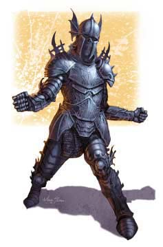

中型构装生物

| 生命骰： | 16d10+20（108点生命值） |
| 先攻： | +3 |
| 速度： | 60英尺（无法奔跑） |
| 防御等级： | 28（+3敏捷，+10天生，+5偏斜），接触18，措手不及25 |
| 基本攻击／擒抱： | +12/+19 |
| 攻击： | 挥击+19近战 |
| 全力攻击： | 2次挥击+19近战 |
| 伤害： | 挥击2d6+7 |
| 面宽／触及： | 5英尺/5英尺 |
| 特殊攻击： | 紧勒 |
| 特殊能力： | 力量爆发、构装生物特性、无敌、祈愿术 |
| 豁免： | 强韧+5，反射+8，意志+8 |
| 属性： | 力量25，敏捷16，体质―，智力―，感知16，魅力10 |
| 技能： | ― |
| 专长： | ― |
| 地域： | 任何陆地 |
| 组织： | 单独 |
| 挑战等级： | 16 |
| 宝物： | 仅魔法物品 |
| 阵营： | 通常混乱中立 |
| 进化： | 17�C45生命骰（中型） |
这种力量惊人的神秘构装生物起源未知，外形如同抛光黑色板甲组成的活化盔甲。部分饰有华丽纹样，部分则朴实实用。其材质非金属，而是某种陶瓷物质包裹着能爆发巨力的实心肌肉组织。
佐达极少言语――在人类一生中通常最多只说一句话，有时甚至仅为只言片语，但每句话都必定意义重大。所有听见者皆能理解其意（无视语言壁垒，效果如同立即生效的巧言术）。
偶有佐达会跟随冒险队伍同行，或参与冒险，或静默观察。
佐达从不主动攻击，仅进行自卫反击。多数徒手作战，少数（10%）会使用魔法武器。
紧勒（Ex）：徒手战斗时，佐达较少出拳，而是尝试擒抱（擒抱加值+19）。成功擒抱后每轮造成1d6+7点伤害。
力量爆发（Ex）：每日三次，佐达可使力量值翻倍至50（力量加值+20），持续1轮。
构装生物特性：免疫影响心灵效果、毒素、睡眠、麻痹、震慑、疾病、死亡效果、死灵系效果及需强韧豁免的效果（除非该效果也作用于物品）。不承受重击、瘀伤、属性伤害、属性吸取、能量吸取或巨创致死。无法自我愈合但可被修复，不能复活或复生。具备黑暗视觉（60英尺）。
无敌（Ex）：除钝击武器外免疫所有攻击，但这类武器的增强加值（如果有）在确定攻击结果时被忽略。
祈愿术（Su）：每年一次，佐达可如与其HD相同施法者等级的术士般施展祈愿术改变现实。有记录以来无一佐达在一个世纪内使用该能力超过一次。即使此许愿术的效应至关重要，但其表现也往往微妙隐晦，鲜有人知出自佐达之手。